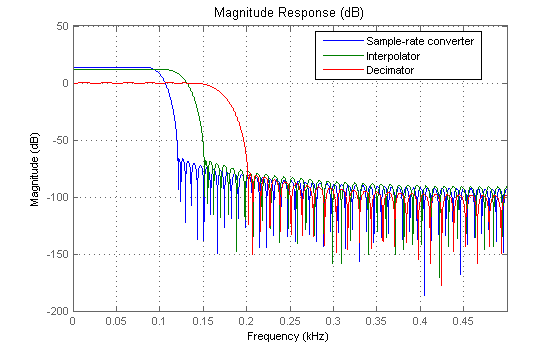
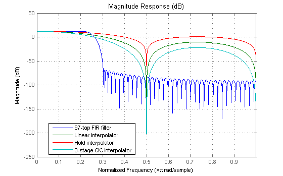
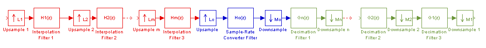
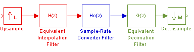
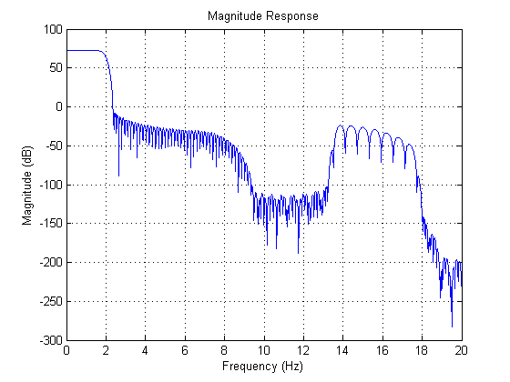
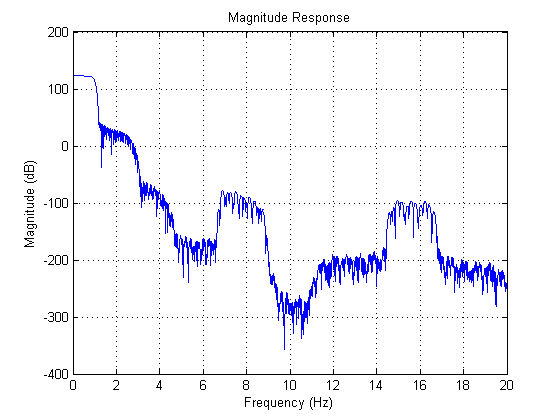
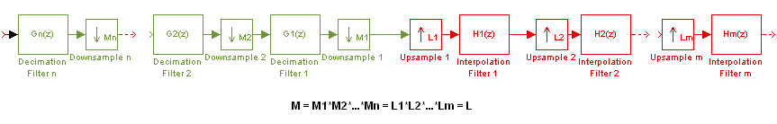
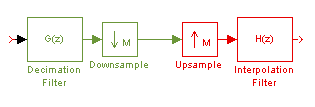

This demonstration shows how to perform analysis on single-stage and multistage multirate filters.
The analysis of single-stage multirate filters is performed at the rate the filter is operating. For decimators, the rate is equal to the input rate. For interpolators, the rate is equal to the output rate. For sample-rate converters, the rate of the filter is equal to the input rate multiplied by the interpolation factor. If a sampling frequency is given, it assumed that is the sampling frequency at which the filter is operating. The following plot overlays the magnitude response of a sample-rate converter, an interpolator, and a decimator. For the first filter, the input sampling frequency is 1000/4 and the output sampling frequency is 1000/3. For the interpolator, the input Fs is 1000/4 and the output Fs is 1000. Finally, for the decimator, the input Fs is 1000 and the output Fs is 1000/3.
h1 = mfilt.firsrc(5,3); % Use a default filter h2 = mfilt.firinterp(4); % Use a default filter h3 = mfilt.firdecim(3); % Use a default filter Fs = 1000; NFFT = 8192; hfvt = fvtool(h1,h2,h3,'Fs',Fs); legend(hfvt,'Sample-rate converter','Interpolator','Decimator'); set(hfvt, 'Color', [1 1 1])
All interpolators and decimators exhibit a lowpass response. The simplest interpolators, like the CIC interpolator and the hold interpolator have a poor lowpass response. However, they are easy to implement and do not require any multiplications to be performed in real-time. The following plot compares the lowpass response of four different interpolators. All of them have an interpolation factor of 4. One can easily see the difference in the quality of the lowpass filter, depending on which type of interpolator is used. The CIC interpolator has more gain than the other interpolators. For analysis purposes, we include a scalar in cascade with the CIC filter to normalize its gain.
h(1) = mfilt.firinterp(4); % Use default filter h(2) = mfilt.linearinterp(4); h(3) = mfilt.holdinterp(4); hcic = mfilt.cicinterp(4,1,3); % 3-stage CIC; differential delay = 1 hscalar = dfilt.scalar(1/gain(hcic)); h(4) = cascade(hscalar,hcic); hfvt = fvtool(h); legend(hfvt,'97-tap FIR filter','Linear interpolator','Hold interpolator',... '3-stage CIC interpolator'); set(hfvt, 'Color', [1 1 1])
Analysis of multistage filters is possible for multistage filters of the following form:

Any of the blue, red, or green sections is optional. So one can perform analysis on a multistage interpolator, a multistage decimator, or a multistage sample-rate converter.
In performing the analysis, an equivalent overall filter is computed for the interpolation section and/or the decimation section as follows:

Where L = Lo*L1*L2*...*Lm;
M = Mo*M1*M2*...*Mn;
H(z)= H1(z^(Lo*L1*...Lm))*H2(z^(Lo*L2...Lm))...Hm(z^(Lo)); and
G(z)= G1(z^(Mo*M1*...Mn))*G2(z^(Mo*M2...Mn))...Gn(z^(Mo))
Finally, the filters H(z), G(z), and Ho(z) are all operating at the same rate and can be combined into a single filter on which the analysis is performed. If a sampling frequency is specified, it is assumed that this single overall filter is operating at that rate.
We now present an example of the analysis of a multistage interpolator. See Design of a Digital Down-Converter for GSM for an example of a multistage decimator used for GSM.
We will cascade four interpolators to form a four-stage filter. The last interpolator will be a CIC filter. In this case, the sampling frequency specified corresponds to the output of the four-stage interpolator because this is the rate at which the equivalent filter is operating.
h(1) = mfilt.firinterp(4); h(2) = mfilt.firinterp(2); h(3) = mfilt.firinterp(2); h(4) = mfilt.cicinterp(16); Hc = cascade(h); % Compute frequency response between 0 and 200 Hz. Fs = 1000 Hz [Hf,f] = freqz(Hc,0:1e-2:20,1000); plot(f,20*log10(abs(Hf))) grid on; title('Magnitude Response'); xlabel('Frequency (Hz)'); ylabel('Magnitude (dB)'); set(gcf, 'Color', [1 1 1])
We now add some decimation stages to form a multistage sample-rate converter. The sampling frequency specified once again corresponds to the rate of the equivalent filter. This is the fastest rate in the entire system in this case.
h(5) = mfilt.firsrc(2,3); h(6) = mfilt.cicdecim(13); h(7) = mfilt.firdecim(5); Hc2 = cascade(h); % Compute frequency response between 0 and 200 Hz. Fs = 1000 Hz [Hf,f] = freqz(Hc2,0:1e-2:20,1000); plot(f,20*log10(abs(Hf))) grid on; title('Magnitude Response'); xlabel('Frequency (Hz)'); ylabel('Magnitude (dB)'); set(gcf, 'Color', [1 1 1])
In addition to the multistage filter shown, analysis of a multistage filter where decimation occurs prior to interpolation is possible provided the overall interpolation and decimation factors are the same. Notice that this does not necessarily mean that there is an equal number of decimation and interpolation stages.
The multistage structure that can be analyzed is as follows:

In this case, two equivalent filters are found:

Because the overall interpolation factor L is equal to the overall decimation factor M, both equivalent filters are operating at the same rate. If a sampling frequency is specified, it is assumed to be the rate at which both filters are operating. This would also be equal to the input and output rate for this case.
For an example of an analysis on this type of multistage multirate filter see Multirate Multistage FIR Filter Design.